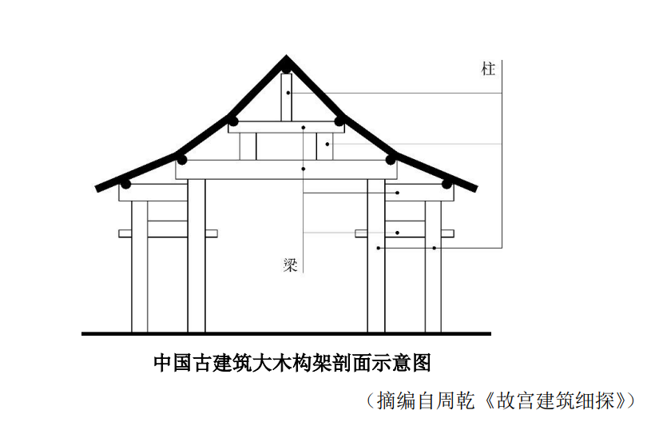

练习 · 实用类文本阅读
古建筑的“偷梁换柱”
理解古建筑原位换柱的方法及其受力原理。
导读
文体与题材：建筑技术说明文；主题为木构古建筑立柱修缮的原位替换方法。
作者与出处：材料摘编自周乾《故宫建筑细探》，选入2024年高考语文全国甲卷第4—6题。
内容脉络：文章先释梁柱受力关系，再写立柱损坏和临时支撑、抽换新柱的步骤，最后从梁、柱和整体结构三个方面解释稳定性。
内容主旨：“偷梁换柱”的关键是临时托梁并原位更换损坏立柱，使结构的受力、传力方式保持稳定。
题号对应：本页第1—3题分别对应原卷第4—6题；第3题题干中的“第5题”指本页第2题。
阅读重点：把工程步骤与受力原理对应起来；将题中太和殿实例与另一种旁置新柱的做法比较。
原文
原文按结构分节；随文内容可定位至对应段落。
原文·释义：工程中的“偷梁换柱”是一种修缮方法。
①“偷梁换柱”多指以假代真，用欺骗的手段改变事物的性质，然而在古建筑工程领域，“偷梁换柱”却属于一种科学实用的修缮加固方法。
原文·构造：梁承重并向柱传力，柱继续向下传力。
②梁是截面形状一般为长方形的木料，且木料的长度尺寸远大于截面尺寸。梁为水平放置，两端的底部有支撑构件。梁主要用于承担建筑上部构件及屋顶的全部重量，并把这些重量向下传给支撑构件。柱为梁的支撑构件。柱子截面形状一般为圆形，长度尺寸远大于截面直径。柱子为竖向放置，主要用于承担上部梁传来的重量，并向下传递给下部的梁或直接传至地面。梁与柱采用榫卯形式连接，形成稳固的大木结构体系。位于屋架内的若干梁在竖向被层层往上“抬”，上下梁之间由短柱支撑，底部的梁由立于地面的立柱支撑。梁、柱均为中国木结构古建筑的核心受力、传力构件，缺一不可。
原文·操作：假柱托梁，抽换原柱后移去假柱。
③对于古建筑而言，立于地面的立柱，或因长期承受上部结构传来的重量而产生开裂残损，或因柱底部位长期受到地面潮气影响而出现糟朽残损，这导致木柱强度下降，无法正常支撑梁。此时可采用“偷梁换柱”的加固方法。“偷梁换柱”实际就是“托梁换柱”。其基本做法为：首先将“假柱”（即临时的竖向支撑构件）安装在梁底部、原柱（原有立柱）旁边；再抽去原柱，使梁传来的重量暂时由“假柱”承担；然后安装新柱，新柱的材料、尺寸及安装位置与原有立柱相同；最后将“假柱”移去。
原文·原理：梁、柱及整体构架在换柱期间保持稳定。
④完善的“偷梁换柱”加固方法具有科学性，其原理主要包括三个方面：其一，从梁的角度而言，它是水平受力构件，并把外力向下传给立柱。梁只有保持水平稳定状态，才能保证整个大木结构的稳定。在加固古建筑的过程中，梁始终受到支托，因而能一直保持水平稳定状态。其二，从柱的角度而言，它是竖向支撑构件，并最终把上部构件的重量传给地基。只有立柱具有充足的承载力，且与梁有可靠连接时，才能有效承担梁传来的作用力。加固过程中，技术人员虽然将原柱抽去，但是预先将“假柱”设置于原柱附近，让“假柱”代替原柱发挥支撑作用，因而换柱过程对结构整体的稳定基本无影响。换柱完成后，新柱与原柱有着同样的材料、尺寸，且与梁有着相同的可靠连接方式，它完全能够代替原柱发挥支撑作用。其三，从梁、柱整体结构角度而言，“偷梁换柱”方法对整体结构干扰小，且能达到良好的加固效果：原柱被新柱原位替换，新柱不仅有很好的支撑作用，而且与梁仍有可靠连接；“假柱”仅用于加固过程的临时支撑，且在原柱撤去后新柱安装前，能够与梁临时组成稳定的结构体系。因此，在“偷梁换柱”过程中，梁、柱结构整体始终处于稳定状态。
（摘编自周乾《故宫建筑细探》）

第1题 · 内容理解
下列对原文相关内容的理解和分析，不正确的一项是（）（3分）
A．“偷梁换柱”这一成语在现今的使用中多含有贬义的色彩，但在古建筑工程领域，它是指一种修缮加固的科学方法，完全没有贬义。
B．中国古建筑大木构架剖面示意图展示了几种不同位置、不同尺寸的柱，这些柱子中，立于地面的立柱比较容易发生糟朽残损的情况。
C．结合图文可以发现，屋顶的重量由上层柱承担，然后传给梁，再由梁传递给其下的短柱，依次向下传递，最终由底部的立柱传至地面。
D．“偷梁换柱”的加固方法包括托梁、抽柱、换柱等步骤，在每一个步骤中梁一直会得到很好的支撑，从而始终能够保持水平稳定状态。
参考答案1展开 / 收起
参考作答
C。
审题与考查点
题干要求选择“不正确”的一项。分别核对成语的语境义、立柱损坏的原因、梁柱传力次序和换柱过程的稳定性；B、C两项还须对照示意图。
文本分析
A项查看证据 ↗
首段把成语常用义中的“欺骗”与古建筑工程中的“科学实用”并置。选项分别说明两种语境中的褒贬色彩，保留了工程领域这一适用范围，因而符合原文。
B项查看证据 ↗
示意图列出屋架各层的短柱和落地立柱；原文又明确指出，柱底长期受地面潮气影响会发生糟朽。落地立柱更容易接触这种致损条件，所以选项的比较判断有图文依据。长期承重对应开裂，不能把它直接说成糟朽的原因。
C项查看证据 ↗
原文把承担建筑上部构件及屋顶全部重量的作用归于梁，柱承接梁传来的重量，梁柱逐层向下传力。选项把屋顶的重量先归于上层柱，再传给梁，改变了原文所述的整体传力关系。不能由此进一步断言任何短柱都不承受来自屋顶的荷载。
D项查看证据 ↗
原文先安装假柱托梁，再抽原柱、装新柱，最后移去假柱；后文明确说明梁始终受到支托。原柱、假柱、新柱接续承担支撑任务，正好保证各步骤中梁的水平稳定，选项成立。
知识点
图文互证是把图中的位置和构件关系与文字所说的功能对应。判断信息转述是否成立，要保留施事、承受者、传递方向与因果条件。参见文本证据与阅读推论、信息转述与判断范围。
解题方法
先在图中辨认水平梁和竖直柱，再按原文画出“梁受力→柱承接→下层梁或地面”的传递方向。将四项中的评价词、损坏原因和步骤分别对回原段，检查是否改换对象或关系。
易误辨析
“长期承重”与“受潮”分别联系开裂和糟朽，不能混成同一种损坏原因。C项的错误在于改变全文概括的传力关系，不能据此把柱解释为不承重。
答案组织与检核
核定A、B、D均有对应依据，C改变梁柱的传力关系，按“不正确”的设问作答。解释C时写明谁向谁传力，不只写“张冠李戴”。
第2题 · 词语补写
请根据原文内容，在下面文段的横线处补写出恰当的词语。（3分）
工程实例：故宫太和殿是我国最大的木构大殿，明清两代帝王即位或节日庆典都在此举行。2004年，技术人员在对太和殿进行勘查时，发现有一根立柱下部三分之一的位置出现了严重糟朽，于是采取了“偷梁换柱”的方法对该立柱进行加固。具体过程如下：先使用“假柱”托住原柱上部的梁。“假柱”为完好的木料，被安装在①________附近，用于临时支撑梁。再把柱子底部糟朽部分抽去，以便用②________代替。原柱糟朽部分去掉后，剩余的部分做成巴掌形，与新柱搭接。新柱与被抽去的糟朽部分同材料、同形状、同尺寸，且顶部亦做成巴掌榫形状。最后再把③________拆除，即完成了原有立柱的加固。
参考答案2展开 / 收起
参考作答
①原柱。
②新柱。
③“假柱”。
审题与考查点
补写对象是构件名称。三个空依次询问临时支撑的位置、糟朽部分的替代物和完工后拆除的对象；须将原文操作过程与太和殿的局部修缮对应。
文本分析
第1步 · 原柱位置与替换构件查看证据 ↗
第一空问假柱安装在哪里，原文“原柱（原有立柱）旁边”对应实例中的“附近”，填“原柱”。第二空问由什么替代糟朽部分，后文直接说明新柱与该部分同材料、同形状、同尺寸，填“新柱”。实例只替换损坏部分，不是把整根原柱全部抽走。
第2步 · 临时支撑的撤除查看证据 ↗
假柱的作用被限定为“临时支撑梁”。实例中剩余原柱与新柱搭接后，修复的立柱重新承重，临时支撑才可撤除；与原文“最后将‘假柱’移去”对应，第三空填“假柱”。
知识点
信息整合须识别相同功能在不同实例中的对应关系。“先、再、最后”确定步骤顺序；“原柱、新柱、假柱”分别标示原有构件、替换构件和临时构件。参见信息概括与整合。
解题方法
先依据“安装在……附近”寻找位置参照物，再依据“用……代替”寻找承担永久支撑的构件，最后依据“拆除”判断哪个构件完成临时任务。填后通读，检查是否仍有构件持续托住梁。
易误辨析
原文说明整柱替换，太和殿实例只去掉糟朽部分并搭接新柱。两者保留临时托梁与原位修复的共同原理，但不能把实例复述为整根原柱全部撤去。
答案组织与检核
按①②③顺序只填所需词语；核对“原柱”提供位置参照、“新柱”承担修复后的支撑、“假柱”在最后撤除。三个名称不可互换。
第3题 · 方案比较
清代的古籍中有另一种“偷梁换柱”的记载：当某根立柱损坏需要更换时，为节省工料，工匠只是在原柱旁边设一根新柱，再撤去原柱。为什么第5题“工程实例”中，太和殿修缮没有采用这种更简便的加固方式呢？请简要分析。（6分）
参考答案3展开 / 收起
参考作答
①保持结构稳定：旁置新柱会改变永久支点的位置，可能影响原有受力、传力关系。太和殿体量大、用途重要，修缮须审慎维持既有构架；原位修复对结构干扰较小。
②保存文物原貌：保留完好的原柱，仅以同材料、同形状、同尺寸的新柱替换糟朽部分，有利于更好地保存原有构件和形制，节省工料不应优先于保护。
审题与考查点
比较对象是原题第5题（本页第2题）工程实例与本题古籍记载。应解释太和殿为何不采用旁置新柱，分别考虑结构稳定、保留原构件和大殿的具体条件。
文本分析
第1步 · 保持受力与传力关系查看证据 ↗
题干方法把新柱设在原柱旁边；原文方法要求新柱与原柱安装位置相同，并说明原位替换对整体结构干扰小。改变永久支点的位置可能改变梁柱的受力和传力关系，工程实例又说明太和殿体量大、用途重要，评估修缮方案尤其需要核查既有构架的支承关系，不能仅凭少一道工序就认定旁置方案同样适用。
第2步 · 保留完好构件与文物原貌查看证据 ↗
工程实例只抽去柱底糟朽部分，保留其余原柱，并以同材料、同形状、同尺寸的新柱搭接。这些具体措施表明修缮重视保留原有构件及形制；旁置新柱并撤掉原柱会改变原貌，也舍弃尚完好的部分，节省工料不能成为首要标准。
知识点
方案比较须选定共同维度，并结合对象的约束判断优劣。本题的共同维度是永久支点位置、原构件保留程度、施工干扰与成本；“省工料”只回答成本问题。参见比较阅读、多材料阅读。
解题方法
把两种方案列成对应项：原位搭接或旁置新柱，保留完好部分或撤去原柱。再用原文稳定性原理解释位置差异，用工程实例解释保护要求，最后结合太和殿的规模和用途限定结论。
易误辨析
不能把“可能影响整体稳定”夸大为“旁置新柱一定使建筑倒塌”，也不能杜撰测算过程。只复述施工步骤尚未回答原因，须说明步骤差异怎样关系到结构稳定与文物保护。
答案组织与检核
从结构稳定与文物保护两个角度分别作答，把太和殿的规模和用途放入具体理由中，每点说明一种实际差异及其依据。检查是否同时使用原文与工程实例，避免将“原位更稳定”换说数遍充作不同要点。
参考文献
2024年高考语文全国甲卷原卷，现代文阅读第4—6题；周乾《故宫建筑细探》。教育部教育考试院的2024年全国高考语文试题评析说明了该题组的选材与考查方向。
本文关联
文本证据与阅读推论1 处
阅读条目 →知识点 ↗图文互证是把图中的位置和构件关系与文字所说的功能对应。判断信息转述是否成立，要保留施事、承受者、传递方向与因果条件。参见文本证据与阅读推论、信息转述与判断范围。
信息转述与判断范围1 处
阅读条目 →知识点 ↗图文互证是把图中的位置和构件关系与文字所说的功能对应。判断信息转述是否成立，要保留施事、承受者、传递方向与因果条件。参见文本证据与阅读推论、信息转述与判断范围。